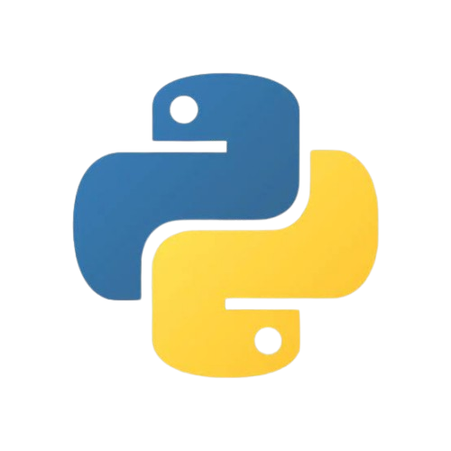
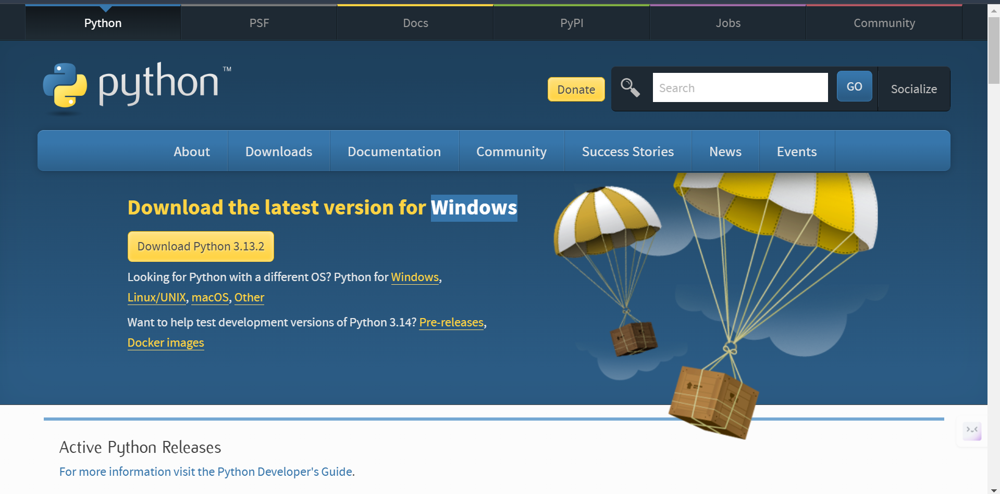

Python is a powerful, high-level, interpreted programming language. / పైథాన్ ఒక శక్తివంతమైన, హై-లెవెల్, ఇంటర్ప్రెటెడ్ ప్రోగ్రామింగ్ భాష.
It is known for its simple syntax, making it beginner-friendly. / ఇది సులభమైన వాక్యనిర్మాణాన్ని కలిగి ఉండి, ప్రారంభకులకు అనుకూలంగా ఉంటుంది.
Used in various fields such as web development, data science, artificial intelligence, and automation. / వెబ్ డెవలప్మెంట్, డేటా సైన్స్, AI, ఆటోమేషన్ వంటి అనేక రంగాలలో ఉపయోగిస్తారు.
Let's explore Python and learn how to install it step by step! / పైథాన్ గురించి తెలుసుకుందాం మరియు దాన్ని ఎలా ఇన్స్టాల్ చేయాలో స్టెప్ బై స్టెప్ నేర్చుకుందాం!

python --version to verify. / CMD లేదా టెర్మినల్ తెరిచి
python --version టైప్ చేసి వెరిఫై చేయండి.print("Welcome to Python Programming!")
Save it as first_program.py and run using python first_program.py. / దీన్ని
first_program.pyగా సేవ్ చేసి, python first_program.py తో రన్ చేయండి.